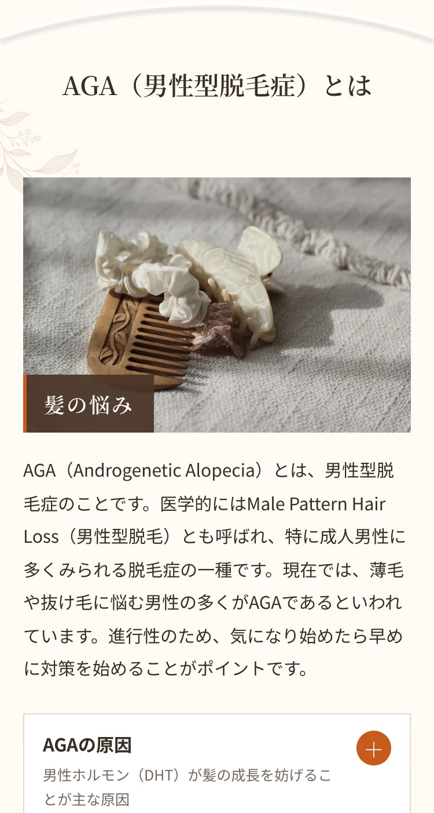
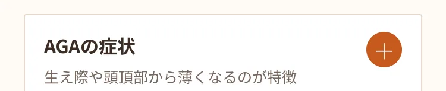
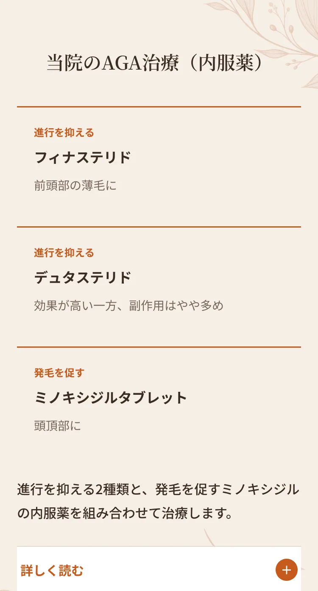
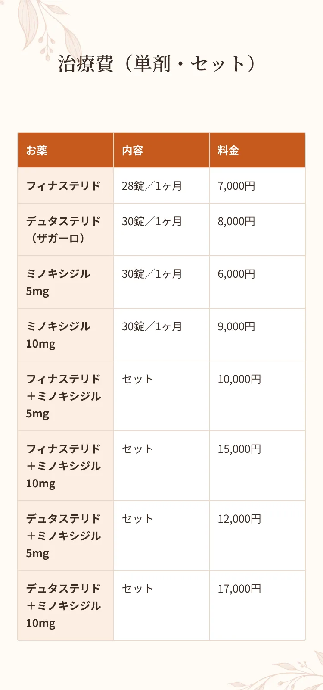
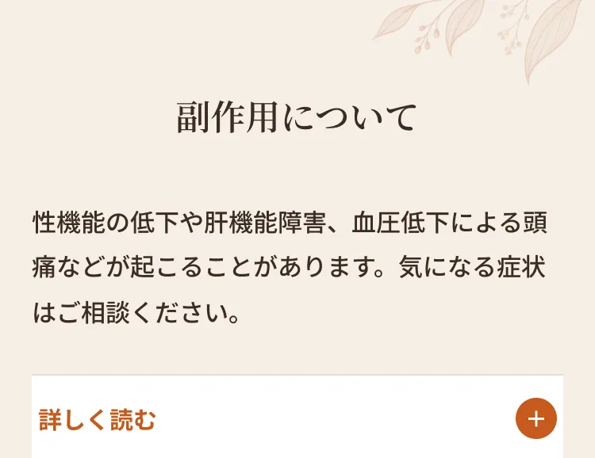
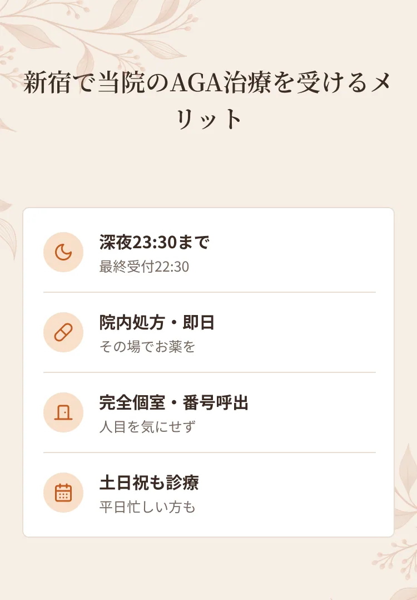
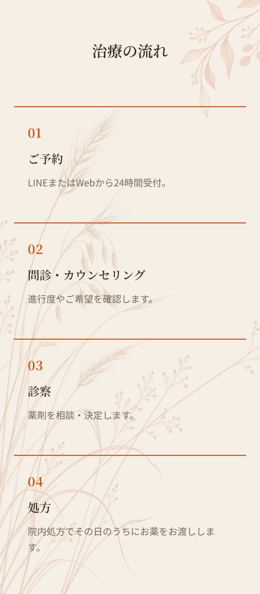
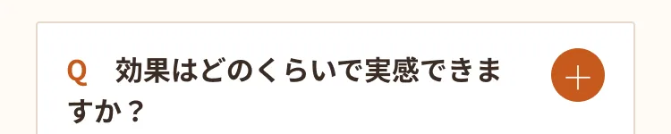
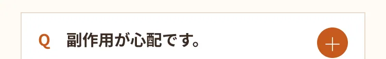
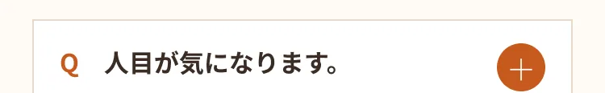

AGAは、男性ホルモンの影響や遺伝、ストレス、食事、生活習慣の乱れなどによって、男性ホルモンのバランスが乱れることで起こるとされています。特に、男性ホルモンの一種であるジヒドロテストステロン（DHT）が毛周期に影響し、髪が十分に成長する前に抜けてしまうことが薄毛につながります。

AGAでは、ヘアサイクル（毛周期）が乱れ、毛の成長期が短くなります。その結果、髪が太く育つ前に抜けてしまい、生え際や頭頂部の髪が薄くなってくるのが特徴です。額の生え際が後退するタイプ、頭頂部から薄くなるタイプ、その両方が進むタイプなどがあります。

当院では、症状の進行を抑える内服薬2種類（フィナステリド・デュタステリド）と、発毛を促す内服薬（ミノキシジルタブレット）を使用します。フィナステリドはDHTの生成を抑え、抜け毛・薄毛の改善が期待できるお薬で、前頭部の薄毛に効果的とされています。デュタステリドはフィナステリドより血中に長くとどまるとされ、効果が高い一方で副作用の頻度はやや多いとされます。ミノキシジルタブレットは、血管を広げて血流を促進し、頭皮に栄養を行き渡らせることで発毛・育毛効果が期待でき、頭頂部に効くとされています。継続使用により、ハリ・コシのある髪が生えてくることが期待できます。効果の現れ方には個人差があります。


フィナステリドはDHTの働きを抑えるため、体内のホルモンバランスの変化により、性機能障害や抑うつ症状などが起こる可能性があります。また、代謝の際に肝臓に負担がかかり、ごくまれに肝機能障害が起こるリスクもあります。デュタステリドは血中に長くとどまるため、効果が高い一方で副作用の頻度はやや多いとされます。ミノキシジルタブレットでは、血圧低下による頭痛やめまいなどが起こることがあります。そのほか、嘔吐、動悸、勃起機能不全、射精障害、性欲の減退、発疹、むくみなどがみられることがあります。気になる症状があればご相談ください。



A.院内処方で初診当日にお渡しできます。

A.個人差がありますが、継続使用で実感されることが多いお薬です。

A.性機能や肝機能などに関する副作用の可能性をご説明し、状態に合わせて処方します。

A.完全個室・呼び出し番号制で、他の患者様と顔を合わせにくい環境です。

A.深夜23:30まで（最終受付22:30）対応しています。